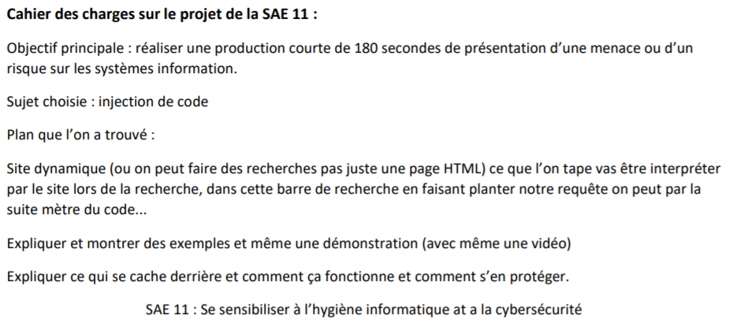

SAE 11 : Se sensibiliser à l’hygiène informatique et
à la cybersécurité :
- L’objectif de cette SAE est de rendre un livrable qui est une vidéo de 3 minutes (180 secondes) parlant de cyber sécurité dans un domaine que l’on choisit.
- Pour commencer on a réalisé le MOOC de l’ANSSI sur la sécurité des système informatique (que j(ais personnellement fini après la présentation de la vidéo réaliser). Cela nous a permis (à mon groupe et moi) de choisir notre sujet de la vidéo :
L’injection de code puis plus précisément l’injection de code en SQL.

- Nous avons donc commencé a faire nos recherches sur l’injection de code en premier temps puis sur le SQL en lui-même. On a compris comment les injection de code sont faites basiquement.
- Une fois les recherches commencées on a commencé à structurer par écrit le livrable que l’on voulait faire :

- On a donc après cela réalisé une première écriture du script qui nous a servi de base pour la rédaction finale.
- Une fois l’objectif bien défini, et les bases du script mises sur papier on s’est réparti les tâches à faire dans le but d’accélérer l’avancée du projet. Les tâches étaient reparties de la façon suivante : Julien s’occupait du slide pour la vidéo,
Arnaud des images nécessaires et moi de la rédaction finale du script.
- Une foi tout de prêt, on a enregistré séparément les trois parties sur OBS.

- Pour finir Julien a monté nos trois parties pour la vidéo finale.
- Cette SAE nous a permis de comprendre les architectures liées au base de données et leur fonctionnement. Elle nous a permis aussi de voir les vulnérabilités présentes dans certains systèmes et comment s’en prévenir.